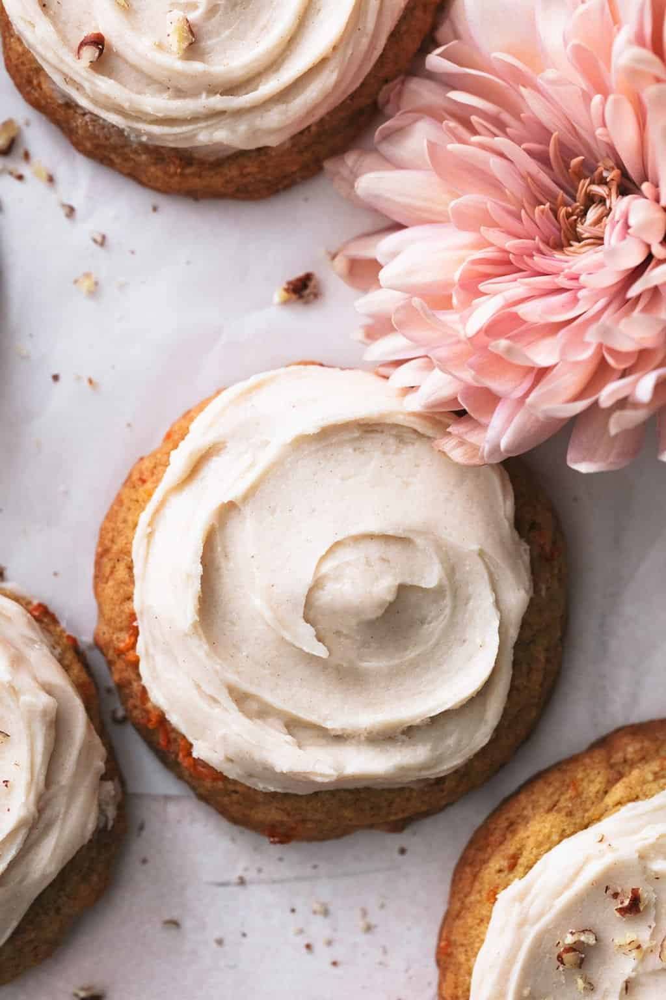

Carrot Cake Cookies

Description
Carrot cake cookies are the ultimate portable version of my favorite springtime
treat. With all of the spicy and creamy goodness of carrot cake you really can't
go wrong and you'll have everyone begging you to bring them for holidays and
gatherings all year-round. Plus with a veggie inside it's practically a health
food right?
Ingredients
For the cookie dough
- 2 3/4 c. flour
- 1 tsp. baking soda
- 2 tsp. cinnamon
- 1 c. butter - room temperature (should still be slightly firm)
- 3/4 c. sugar
- 3/4 c. brown sugar
- 2 tsp. vanilla
- 2 large eggs
- 1 1/2 c. finely grated carrots - about 4 medium carrots
For the cream cheese frosting
- 4 tbsp butter
- 2 ounces cream cheese - softened
- 3 c. powdered sugar
- 1 tsp. vanilla
- 4-6 tbsp. milk - as needed
Steps
- Preheat the oven to 350*F. Very lightly grease a baking sheet or (better yet)
line with a nonstick baking mat.
- In a medium bowl whisk together flour, baking soda, salt, and cinnamon.
- In a large bowl combine butter and sugars and mix for 2-3 minutes until light
and fluffy.
- Mix in vanilla and eggs, then stir in grated carrots.
- Stir dry ingredients into wet ingredients until just incorporated and there
are no more streaks of flour (don't over-mix).
- Drop spoonfuls of cookie batter (I used a large cookie scoop, about 2
tablespoons) onto prepared baking sheet at least 2-3 inches apart.
- Bake in preheated oven for 10-12 minutes until edges begin to brown and the
tops look dry. Allow to cool on baking sheet for about 5 minutes before
transferring to a cooling rack to cool completely.
- While cookies are cooling, prepare the frosting. In a small sauce pan melt
the butter over medium-low heat. Once melted, stir over the heat for 2-4
minutes longer until color changes from pale yellow to deep golden-brown.
Remove from heat.
- In a large bowl combine cream cheese and browned butter and mix well.
- Gradually mix in the powdered sugar 1 cup at a time until completely
incorporated. Mix in vanilla and milk 1 tablespoon at a time until desired
consistency is reached (should be fluffy and easily spreadable).
- Frost completely cooled cookies. Store in an airtight container at room
temperature for up to 5 days.